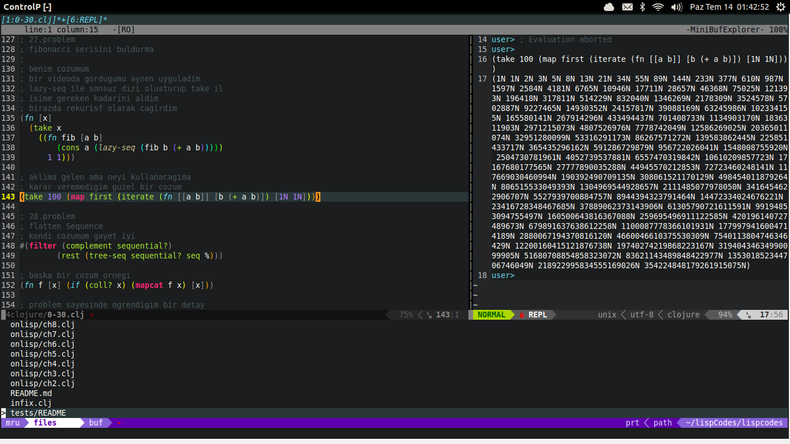

Bir önceki yazımda da dediğim gibi paradigma değişikliğine gidip Lisp ailesi diller ile uğraşmaya başlamıştım. Bu dillerden Clojure'u seçip ciddi anlamda üstüne düşüyorum. Tabi Clojure ile ilgilenirken bir yandan da Lisp ailesinin getirdiklerini anlamaya ve uygulamaya çalışıyorum. Bir de fonksiyonel programlamaya alışmaya çalışıyorum. Benim için pek alışkın olmadığım bu dünya gayet heyecanlı gelmeye de başladı diyebilirim. Bu yüzden en iyi öğrenme şekillerinden biri olan öğrendiğini hemen anlatmayı uygulayarak, Clojure'u öğrenirken bir yandan da bloguma notlar tutacağım. İlerde dönüp baktığımda başvuru kaynağı olarak kullanabilirim. Aklıma gelmeyen bazı şeylerede hemen dönüp bakabilirim. Tabi bir de benim gibi sıfırdan başlamak isteyenler için başlangıç noktası olabilir.
Neden Clojure?
-
Bir kere öncelikle Lisp ailesinin son üyelerinden birisi. Yani Lisp'in uzun tarihi sürecinde edindiği birçok tecrübeye sahip yepyeni bir dil. 2007 yılında Rich Hickey tarafından oluşturuldu. Ancak bu kadar kısa bir süreye rağmen gayet yeterli derecede kütüphaneleri ve kullanıcı grubu var. Asıl ilginç olan ise uzun bir süredir adı bile anılmayan bu dilin son birkaç yıl içinde çok fazla sesi çıkmaya başladı. Büyük şirketlerin tek tük geçmesi ile ayrı bir boyuta taşıdı kendini.
-
Clojure diğer script dilleri gibi yorumlanmaz. Yazılan kodlar JVM üzerinde çalışacak şekilde Java byte koduna derlenir. Bu sayede hız konusundaki şüpheleri ortadan kaldırır. JVM üzerinde çalışmasının diğer önemli özelliği Java'nın sahip olduğu tüm kütüphanelere direkt olarak ulaşabilmesi ve onları istediği gibi kullanabilmesi. Bu sayede yazdığınız bi Clojure koduna Java kodlarını ekleyebilir aynı şekilde Java kodlarınızın bir kısmını Clojure ile yazabilirsiniz. Özellikle büyük çaplı Java uygulamalarının kilit noktalarının Clojure ile programlandığını biliyorum.
-
Tamamen fonksiyonel bir dil. Diğer Lisp dillerinde olduğu gibi fonksiyonel programlamanın tüm marifetlerine sahip. Diğer dil paradigmalarında yazmanın eziyet olduğu kodları, sanki ingilizce yazar gibi yazabiliyorsunuz. Girdikçe için içine daha fazla aşık oluyorsunuz. Sonsuz uzunluktaki dizilerde işlemler(laziness) birçok konuda düşünme becerisini geliştiriyor. Matematiksel problemlerde ve bilimsel projelerde ayrı bir hız kazandırıyor insana.

-
Resimden de gördüğünüz gibi bilgisayarlar hızlanmaya devam ediyor. Tabi bu da bir yere kadar gidecek. Artık bilgisayarların hızlarını çok çekirdekli olup olmamaları etkiliyor. Aynı anda birçok çekirdek üzerinde işlem yapan programlar büyük öneme sahip. Bu yüzden fonksiyonel programlama eş-zamanlı işler için bulunmaz nimet. Clojure'da bu iş için diğer rakipleri Scala, Go, Erlang gibi çok büyük öneme sahip. Bu dillere olan ilgiler sürekli artıyor. Ve emin olun artmayada devam edecektir. Özellikle Scala'nın sert girişi ardından son günlerdeki Go'nun yükselişini kimse inkar edemez. Clojure'da bu diller arasına, arkasına Java ve Lisp'in getirdiklerini alarak giriyor. Ve bu tarz işler için biçilmiş kaftan. Hatta tam olarak bu konu üzerine bir Clojure Kursu var. İlgilenenler bakabilir.
-
Clojure diğer fonksiyonel programlama dilleri gibi gerçekten hızlı. Çünkü dildeki veri yapıları değiştirilemez(immutable). Yani siz bir liste oluşturduğunuzda ve üzerinde işlemler yaptığınızda listenin son durumu ilk halinin aynısı. Özellikle değiştirmek istemediğiniz(yan etkiler) takdirde tüm veri yapıları üzerinde kalıcı değişiklikler yapamıyorsunuz. Haliyle kod içerisinde bir yerlerde bir listenin kopyasını alamıyorsunuz. Başta bana çok ilginç gelen bu özellik gerçekten de çok faydalı oluyor. Diyebilirsiniz değiştirmeden herşeyi yapabiliyormuyuz? Evet. Genelde bu şekilde her işinizi halledebiliyorsunuz. Ancak çok gerekli bir durum olduğunda tabiki de Clojure değişiklik yapmanıza izin veriyor. Gerekmedikçe kullanmanın anlamı yok.
Burada yazdığım gibi benzer kanıtlar arıyorsanız buradaki veya buradaki gibi bir link işinizi görecektir. Zaten internet üzerinde neden Lisp, neden Clojure gibi konularda çok fazla yazı var. İstediğiniz bir tanesini seçip okuyabilirsiniz.
Biraz Syntax
Clojure dediğim gibi Lisp ailesi dillerinden birisidir. Yani diğer Lisp dillerinde olduğu gibi aynı syntax yapısını kullanır. Polonyalı notasyonu dedikleri bu yapı ilk başlarda zor gözükse de aslında diğer tüm dillerden daha zarif ve okunabilir yapıda. Ben de başta bu kadar paranteze ne gerek var gibi düşünsemde bir zaman sonra oradaki her parantezin aslında bir amacı olduğunu anladım. Öyle söylenildiği kadar da karışık ve anlaşılmaz değil.
Parantezlerle boğuşacağımız için öncelikle güzel bir geliştirme ortamımızın hazır olması gerekli. Lisp için en iyi geliştirme ortamı kesinlikle Emacs. Direk kendisi için yazılmış ayrı bir Lisp lehçesi bile var. Emacs'in yanında Eclipse, Netbeans veya IntelliJ gibi ortamları sevenlerde rahatça kodlarını buralarda yazabilirler. Ben Vim fanatiği olduğum için Clojure kodlarımı Vim'de yazıyorum. Ve gayette mutluyum. Lazım olan herşeyi rahatça kurdum ve ayarladım. Bu konuyada yakında değineceğim zaten.(Emacs'e alışmak için çok uğraşsamda beni bir türlü içine çekemedi. Vim'deki zerafeti ve kolaylığı bana sağlayamadı. Emacs fanatikleri sinirlenecek ama öyle maalesef. Hala VIM!)

Kurulum
Clojure ile kod yazmaya başlamak için kendi sitesindeki indirme sayfasından java dosyasını indirip aşağıdaki komutla açmak yeterli.
java -jar clojure-1.5.1.jar
Bu sayede önünüze REPL(Read Evolution Print Loop) ortamı gelecek. Artık burada ilk denemelerinizi yapabilirsiniz.(Bu arada android markette de Clojure REPL isimli uygulamayı kurarsanız aynı ortama sahip olabilirsiniz)
user=> (+ 5 6)
11
Yukarıdaki kodun ne yaptığı gayet açık zaten anlatmaya gerek yok. Şimdilik sadece bakmak yeterli. Henüz gerekli ortamlarımızı kurmadık.
Paket Yöneticisi
Clojure diğer birçok dilin de sahip olduğu gibi güzel bir paket yöneticisine sahip. Bu yönetici ile yeni proje oluşturup, çalıştırabilirsiniz. Ubuntu/Debian kullanıcıları aşağıdaki paketi kurarak bu güzel yöneticiye sahip olabilirler.
sudo apt-get install leiningen
Kurulum bittikten sonra istediğimiz bir dizine geçip yeni proje oluşturalım.
lein new hello
Eğer herhangi bir sıkıntı ile karşılaşmadıysanız aşağıdaki gibi birşey görmeniz lazım. Eğer hata ile karşılaşırsanız(ki bende bazı paketlerde sıkıntı yapmıştı. Bunu da verdiği uyarıdan yola çıkarak kurmuştum. Normal şartlarda bir sorun ile karşılaşmamanız lazım.)
Created new project in: /home/halit/hello
Look over project.clj and start coding in proje/core.clj
Aynen verdiği uyarıdaki gibi hello/core.clj içine girerek kodlamaya başlayabilirsiniz. Tabi kodlamaya geçmeden önce ortamınızı da ayarlamanız gerekli. Light Table isimli IDE Clojure kodlamak için gayet güzel bir ortam sunuyor. Eğer Vim veya Emacs fanatiği değil iseniz ve Netbeans, Eclipse gibi ortamların hantallığından şikayet ediyorsanız bir bakın derim. Sublime Text'de bu iş için bir alternatif tabi.
hello
├── project.clj
├── README
├── src
│ └── hello
│ └── core.clj
└── test
└── hello
└── test
└── core.clj
Lein'in bize oluşturduğu proje yukarıdaki gibi oluyor. Biz kodlarımızı src/hello/core.clj içine yazacağız. Kodlarımızı kullanmak istediğimizde lein repl kullanarak interaktif satırımıza girebiliriz. Veya web uygulaması yazdığınızda çalıştırmak için lein run komutunu kullanabiliriz.
Yazdığımız projenin bağımlılıklarını project.clj içine tanımlıyoruz ve gerekli işlemler için lein deps komutunu kullanıyoruz. Bu sayede hiçbir sorunla karşılaşmadan gerekli paketleri kurabiliriz. Aynı şekilde yazdığımız testler için de lein test kullanabilirsiniz.
Şimdi ne olduğunu pek anlamaya çalışmadan ilk basit uygulamamızı yapalım. Önce src/hello/core.clj dosyamızı açalım ve aşağıdaki kodları ekleyelim.
(defn say-hello [x]
(println "Merhaba " x " !"))
Daha sonra lein repl ile REPL ortamımıza girelim. Önümüze gelen kısımda önce (use 'hello.core) ile hangi kodu kullanacağımızı belirtelim. Ve daha sonra bu kod içerisindeki say-hello isimli(şu anda nasıl çalıştığını bilmiyoruz) fonksiyonunu "Clojure" argümanıyla çağıralım.
REPL started; server listening on localhost port 40061
user=> (use 'hello.core)
nil
user=> (say-hello "Clojure")
Merhaba Clojure !
nil
user=>
Yapılabilecek en basit ve gereksiz uygulamayı bu sayede yapmış olduk. Bundan sonraki yazımda Vim için Clojure ortamının kurulumunu anlatmaya çalışacağım. Daha sonrada ufak ufak Clojure'un en başından başlarım. Bu yazılardan çok profesyonel birşeyler beklemeyiniz. Ben ne anladıysam onu anlatacağım. Yanlış anladıklarım da olmuş olabilir. Bunları uyarırsanız bende hazır bu öğrenme aşamasında düzeltirim.